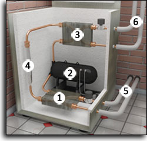
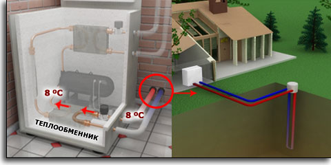
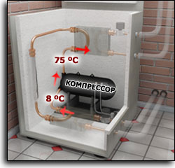
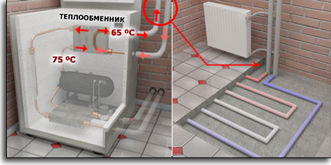
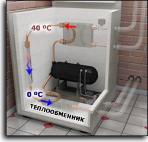
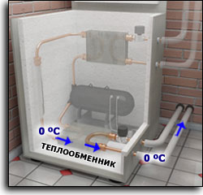

Принцип работы теплового насоса

Тепловой насос - это прибор, позволяющий получать тепловую энергию от низкотемпературных источников (воздуха, воды и земли) и использовать ее для обогрева зданий.
Экологический эффект от использования этой технологии состоит в том, что она позволяет полностью избежать местных выбросов парниковых газов, образующихся при сжигании топлива. Поэтому замена старых котлов, использующих газ или жидкое топливо, на системы, в основе действия которых лежит тепловой насос, становится приоритетной задачей. Ее решение позволит не только сократить потребление ископаемого топлива, но и значительно снизить выброс в атмосферу диоксида углерода.

Тепловой насос состоит из: 1. Теплообменник передачи тепла земли внутреннему контуру.
2. Компрессор
3. Теплообменник передачи тепла внутреннего контура системе отопления
4. Дроссельное устройство для понижения давления
5. Рассольный контур и земляной зонд
6. Контур отопления и ГВС

Первичный контур– полиэтиленовая труба U-образной формы, погруженная в скважину. По трубе циркулирует незамерзающая жидкость. В результате циркуляции ко второму контуру теплового насоса поступает жидкость с температурой +8°С (температура земли).

Жидкость передает свою температуру (+8°С) второму контуру. Во втором контуре циркулирует фреон. (Отличительная особенность фреона состоит в том, что при температуре выше 3°С он из жидкого состояния переходит в газообразное). Жидкий фреон, получая от первичного контура температуру +8°С переходит в газообразное состояние. Далее, газообразный фреон поступает в компрессор, где газ сжимается с 4 до 26 атмосфер. При таком сжатии он нагревается с +8°С до +75°С.(Это самый важный этап работы теплового насоса. Именно на этом этапе происходит преобразование энергии большого объема газа с температурой +8°С в малый объем газа с температурой +75°С. При этом общая энергия газа до и после компрессора остается неизменной. Просто он сконцентрировался в сгусток энергии, которой некуда деваться. Поэтому и происходит нагревание газа до +75°С).

Энергия газа (фреон), разогретого до +75°С, передается в третий контур – систему отопления и горячего водоснабжения дома. В процессе передачи энергии газа третьему контуру после потерь (10-15°С), отопительный контур нагревается до температуры 60-65°С.

Газ (фреон), отдав свою энергию отопительному контуру, остывает до 30-40°С . При этом он по-прежнему находится под давлением в 26 атмосфер. Затем происходит снижение давления до 4 атмосфер (так называемый эффект дросселирования). В результате падения давления происходит значительное охлаждение газа (эффект, обратный повышению температуры при увеличении давления). Он охлаждается до 0-3°С и становится жидкостью. Температура фреона 0-3°С передается теплоносителю первичного контура, который уносит ее вглубь земли. Проходя по скважине, теплоноситель нагревается и выходит на поверхность земли с температурой +8°С, которая опять подается на второй контур.

А в это время происходит процесс завершения цикла во втором контуре. Жидкий фреон с температурой 0-3°С опять соприкасается с первичным контуром, приносящим из земли +8°С. Процесс повторяется